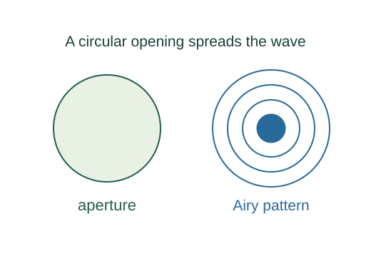
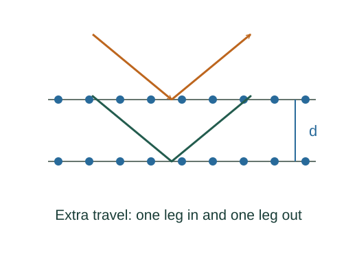

Derive circular diffraction, two-slit envelopes and Bragg angles
The far-field amplitude is the two-dimensional Fourier integral of the aperture. Polar coordinates reduce the angular integral to 2πJ₀, and integrating radius gives 2J₁(u)/u.
What the symbols mean
D: circular aperture diameter; d: crystal-plane separation for Bragg diffraction; α,β: single-slit and slit-separation phase parameters.
When this applies
Scalar far-field diffraction with uniform illumination; circular pupil; coherent equivalent crystal planes; small angle for Rayleigh’s θ ≈ 1.22λ/D.
Developing the argument

Integrate a circular pupil
The far-field amplitude is the two-dimensional Fourier integral of the aperture. Polar coordinates reduce the angular integral to 2πJ₀, and integrating radius gives 2J₁(u)/u.
Locate the first zero
The first positive numerical root of J₁ is 3.831706. Divide by π to obtain the factor approximately 1.21967.
Apply a resolution convention
Rayleigh’s criterion places one source’s central maximum at the other’s first minimum. With small θ, angular separation is approximately 1.22λ/D.
Translate and add two finite slits
Each slit has the same sinc amplitude envelope. Translating a slit shifts phase; summing the two phases multiplies that envelope by 2cos β. Squaring yields the product pattern.
Count paths between crystal planes
A ray reflecting from the next plane down travels extra distance d sin θ on the incoming leg and again on the outgoing leg. Constructive phase requires a total integer wavelength.

A worked example
An aperture twice as wide halves the small-angle Rayleigh limit at a fixed wavelength.
Derivation behind this calculation ↗A point to keep straight
The numerical factor 1.22 comes from a circular-aperture wave integral; it is neither a universal aperture constant nor an empirical fit.
Check the assumptions and derivation ↗